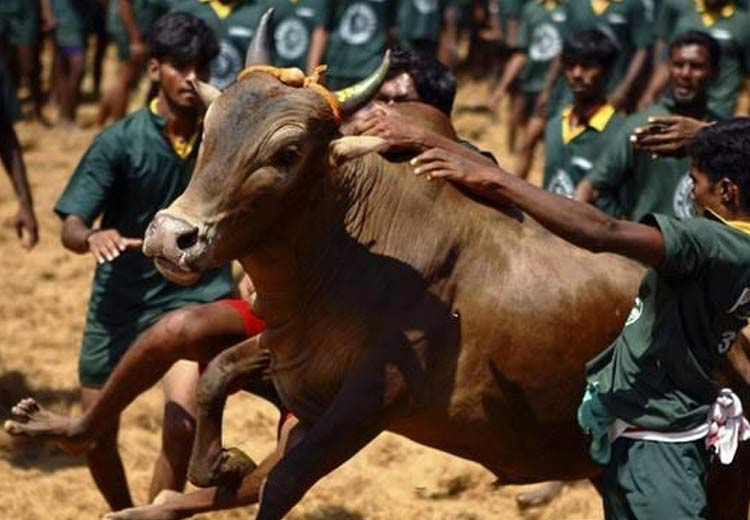
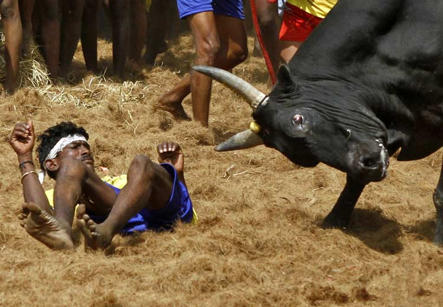

每年的一月，印度雨季结束，村民们开始种植庄稼。为了祈祷丰收，人们用米和奶做成食物献给神灵。驯牛节就是丰收节系列活动的重要组成部分。印度南部的一些村庄每年都要举行激动人心的斗牛运动，这已经成为当地的狂欢节日。印度南部泰米尔纳邦德就于1月14日至16日举办一年一度的驯牛节。
每年的驯牛节，都有来自不同地方的500多头公牛被带到一起，在淋浴后用珠子、铃铛、花环等装饰它们，在一块很大的空地上让牛和勇士们“决斗”。与西方斗牛不同的是，印度东方式的斗牛并不是为了伤害牛，而是要抢夺系在牛犄角上的布袋，那里面装的就是对他们奖励。所以，年轻人通常非常愿意冒着受伤的危险去夺取奖品，以表现自己的勇敢。
斗牛在印度的旅游地区果阿版曾经是一种生活方式，在周日或者公共假日斗牛的时候，有成千上万的人聚集观看呐喊。不像在西班牙和葡萄牙，斗牛已经被广泛地看作是文化遗产的构成部分，果阿版的斗牛没有涉及伤害或者杀死公牛。相反，当两只公牛在开阔的地带彼此攻击和抵撞的时候，人类唯一的参与活动是击打、推、和诱骗它们，这种血腥的抵撞能够持续四个小时，直到其中的一头牛在失败中遥遥晃晃地离去。
果阿版的斗牛，当地叫“迪锐欧”，在某次一名观众被发怒的公牛杀死之后就被禁止，但私下里依然在举行，时间和地点通过口传、短信和秘密的电话来传递。尽管公牛曾经一度穿街走巷地在音乐和人群的围观之中骄傲地去往比赛地点，而现在他们却被汽车秘密地运往比赛地点。几十万卢比的赌注非法地押在结果上面，大笔的钱，经常是通过设在国外的赌博财团易手。警官们在听说有斗牛的消息时就会采取有力的行动来打击这种活动，在得到线人的消息时采取突然袭击。但非法的斗牛依然在举行，观看的热情在南果阿地区特别地高，斗牛的录像甚至不断地发布到网络视频网站YouTube上面。
对于动物权利保护人士来说，斗牛为一种血腥运动，但斗牛主们否认了残酷的说法，他们说他们象对自己的孩子一样对待斗牛，喂养每头牛要花费5，000-10，000卢比(合100-200美元)，让它们参加斗牛是为了补偿喂养它们的成本。
1、每年1月14日至16日是印度传统的驯牛节；
2、印度的驯牛节和西方传统斗牛是有区别的，并不是为了伤害牛。